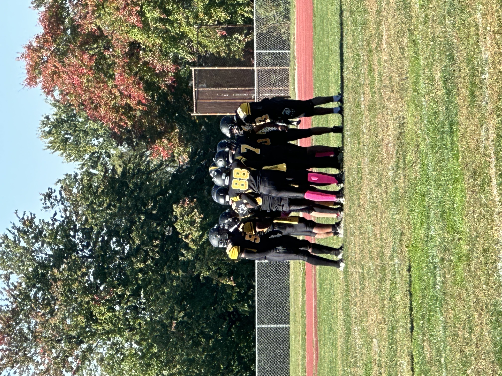

Image Types
JPG Format Example

About This Image
This image shows the Parkville Highschool football team huddling up before a play. This picture was taken by me in 2022 when I was sidelined on the football team due to an ankle injury.
Why JPG Format?
JPG format works very well for this photo due to the wide range of colors that JPG handles effortlessly as well as keeping the file size small. Theres also minimal compression that would be very noticeable on the trees in the background.
Image source: Original photo by Sean VanLeuven
Image source: SportsEvents365